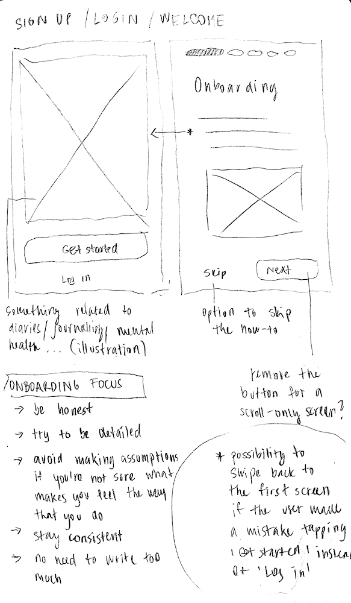
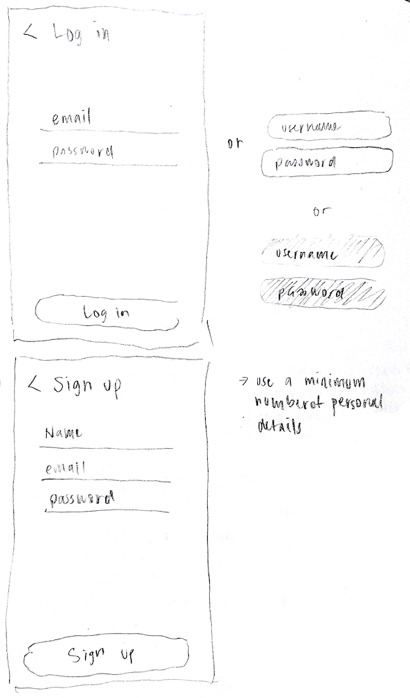
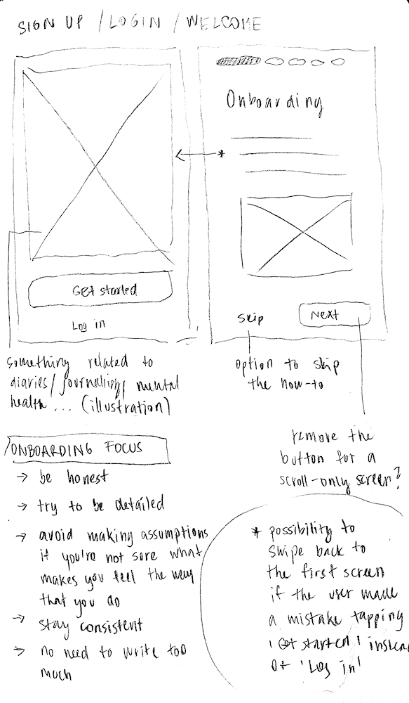
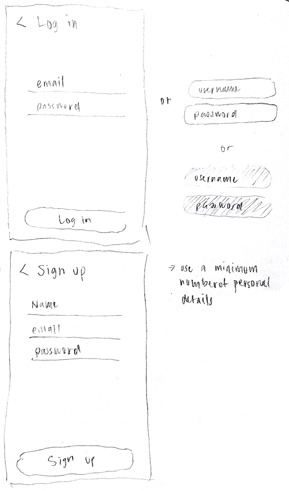

Feelgraph
Investigating the Role of User-Centred Personal Statistics in Exploring Moods and Emotions

Context
Mental wellbeing is declining worldwide, particularly among young adults. Research shows that expressive writing — writing openly about our thoughts and feelings — can improve both emotional wellbeing and physical health.
The challenge is that analysing diary entries manually is time-consuming, making it hard to identify patterns in mood and wellbeing.
Feelgraph is a concept for an iOS app that combines expressive writing with personal analytics, helping users reflect on their mood patterns through simple, clear data visualisation.
My Role
UX Research
Conducted user research, competitive analysis, wireframing, prototyping, and usability testing.
UI Design
Built a design system (typography, colours, components) to ensure visual and functional consistency.
Development
Implemented an iOS prototype in Swift with basic functionality, experimenting with biometric login for data security.
Research & Insights
From the start, I wanted to make sure design decisions were grounded in real user needs, not just assumptions. To do this, I used a mixed-method approach that combined both quantitative and qualitative research - giving me the numbers to spot patterns and the stories to understand why those patterns mattered.
Competitive Analysis & Literature Review
I started by conducting competitive analysis and literature review to understand existing mood-tracking apps, identify common pain points, and explore best practices in expressive writing and personal analytics. This research revealed key gaps: many apps felt impersonal, overwhelming, or visually cluttered, and users were highly sensitive to privacy concerns. These findings helped define the core objectives for Feelgraph: simplicity, clarity, emotional support, and secure handling of personal data.
User Interviews & Surveys
With these insights, I moved into early design exploration, creating low-fidelity sketches and wireframes to experiment with layout, chart styles, and colour palettes. These early concepts were then tested through a structured online A/B questionnaire (Microsoft Forms), which provided quantitative feedback from a broad audience. The survey results informed which colour palettes, chart styles, and interface layouts resonated best with users. I also drew on psychological research on colour and mood, while carefully designing the survey to avoid order effects or priming biases. Participants were recruited via Instagram, LinkedIn, and WhatsApp, with additional responses collected through snowball sampling.
Usability Testing
Building on this feedback, I developed mid-fidelity wireframes and later high-fidelity interactive prototypes in Figma. These prototypes were tested in moderated usability sessions, where participants completed journaling and reflection tasks while I observed their interactions and asked follow-up questions. These sessions provided rich qualitative insights into usability, accessibility, and emotional resonance. One of the clearest takeaways was that users valued simplicity and supportive visuals over complex features, which directly influenced the final design choices.
Ethical Considerations
Ethics were an important consideration throughout. I secured ethical approval before starting, obtained informed consent from every participant, and intentionally avoided collecting unnecessary demographic or personal data. This kept the focus on behaviour and experience while respecting participants’ privacy.
Design & Prototyping
Ideation & Wireframing
With research insights, I began the ideation phase by sketching low-fidelity concepts on paper. These early sketches explored multiple layouts for mood tracking, journaling, and data visualization, allowing me to experiment freely without committing to a final structure. I focused on creating interfaces that were intuitive and emotionally supportive, keeping the user’s reflection and privacy needs at the forefront.
 





Design System & Mid-Fidelity Prototyping
From the sketches, I developed mid-fidelity wireframes, introducing a clearer hierarchy of content, interactive elements, and chart visualizations. At this stage, I incorporated learnings from the A/B testing, including preferred colour palettes, chart styles, and layout preferences. This iterative approach ensured that the design direction was grounded in user feedback and aligned with psychological research on colour and mood, balancing both aesthetics and functionality.
Alongside the wireframes, I built a design system in Figma that defined typography, colour palettes, spacing, interactive components, and iconography. This system ensured visual consistency across screens, streamlined the design process, and allowed for scalable, maintainable design updates. It also supported accessibility standards and reinforced a cohesive, professional aesthetic, demonstrating attention to detail and strategic design thinking.
High-Fidelity Prototyping
With the mid-fidelity wireframes validated, I moved to high-fidelity interactive prototypes. These prototypes leveraged the design system to create a polished, intuitive, and visually cohesive experience. Special attention was given to clarity, simplicity, and emotional resonance, ensuring that users could navigate the app easily while feeling supported in their reflective journaling.
Next, I conducted moderated usability testing with these high-fidelity prototypes. Participants completed journaling and reflection tasks while I observed their interactions and asked follow-up questions. The feedback highlighted areas for improvement in navigation, chart interactivity, and onboarding clarity. One key insight was that users valued supportive, calm visuals and minimal friction over feature-rich complexity, reinforcing the principle of simplicity first, engagement second.
Iterative Refinement & Final Prototype
Throughout the process, I iterated on the prototypes, refining interface components and interactions based on user observations. For example, pie charts were redesigned to clearly show which segments could be tapped for detailed insights, and onboarding text was shortened and made more digestible. Every change was guided by user needs, usability principles, and the design system, ensuring that the final design was both functional and emotionally considerate.
By the end of this process, Feelgraph emerged as a user-centered, visually consistent, and interactive prototype, reflecting a careful balance of research insights, iterative design, and ethical considerations. The project demonstrated how structured research, iterative ideation, and a robust design system can directly inform thoughtful and effective UX/UI design.

Feelgraph Research Poster - summarising the research process, key findings, and design outcomes.